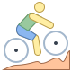

<ion-header>
  <ion-toolbar>
    <ion-buttons slot = "start">
      <ion-back-button></ion-back-button>
    </ion-buttons>
    <ion-title>
      Routes
    </ion-title>
  </ion-toolbar>
</ion-header>

<ion-content>
    <ion-list>
      <ion-item *ngFor="let routeRecord of routeRecords; index as i">
        <ion-label>
          <span class="cat-val">Route type: </span> <span class="val">{{routeRecord.routetype}}</span> <br>
          <span class="cat-val">Length: </span> <span class="val">{{routeRecord.routelength}} miles</span><br>
          <span class="cat-val">Overall Route Rating: </span> <span class="val">{{routeRecord.overallrating}}</span> <br>
          <span class="cat-val">Scenic Rating: </span> <span class="val">{{routeRecord.scenicrating}}</span> <br>
          <span class="cat-val">Paved: </span> <span class="val">{{routeRecord.paved}}</span> <br>
        </ion-label>
        <ion-button [ngSwitch]="routeRecord.routetype" slot="end" size="large" fill="clear" color="medium" (click)="goToViewRoutesModalPage(i)">
          
          
          
          <ion-icon name="arrow-forward" color="secondary"></ion-icon>
        </ion-button>
      </ion-item>
    </ion-list>
</ion-content>
